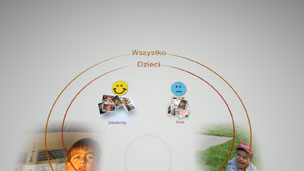

Porządkowanie zdjęć
Grupowanie zdjęć
Możliwe jest wybranie wydarzeń, a następnie pogrupowanie zawartych w nich zdjęć przy użyciu jednej z opisanych poniżej opcji. Wybierz wydarzenia zawierające zdjęcia, które chcesz pogrupować, naciśnij przycisk  , a następnie wybierz kategorię
, a następnie wybierz kategorię  (Grupuj). Jeśli chcesz ograniczyć liczbę pogrupowanych zdjęć, wybierz grupę lub grupy zawierające zdjęcia, które chcesz pogrupować, a następnie użyj innej opcji w kategorii (Grupuj) w celu pogrupowania zdjęć.
(Grupuj). Jeśli chcesz ograniczyć liczbę pogrupowanych zdjęć, wybierz grupę lub grupy zawierające zdjęcia, które chcesz pogrupować, a następnie użyj innej opcji w kategorii (Grupuj) w celu pogrupowania zdjęć.
| Data/Godzina | Grupowanie zdjęć według daty i godziny ich zrobienia. |
|---|---|
| Liczba osób | Grupowanie według liczby osób na zdjęciach. |
| Grupa wiekowa | Grupowanie według względnego wieku osób na zdjęciach. |
| Ekspresja | Grupowanie według wyrazu twarzy osób na zdjęciach. |
| Kolor | Grupowanie według kolorów widocznych na zdjęciach. |
| Typ aparatu | Grupowanie według modelu aparatu fotograficznego użytego do zrobienia zdjęć. |
| Gra | Grupowanie według tytułu gry. |
| Album | Grupowanie według albumów utworzonych w kategorii  (Zdjęcia) na ekranie XMB™. (Zdjęcia) na ekranie XMB™. |
Wskazówki
- Opcja [Wybierz wszystko] służy do pogrupowania wszystkich zdjęć na ekranie [Obszar biblioteki] zgodnie z wybraną opcją.
- Grupowanie opiera się na analizie zdjęć i niekiedy wyniki mogą być odmienne od oczekiwanych.
- Możliwe jest utworzenie listy odtwarzania pogrupowanych zdjęć.
Przykłady pogrupowanych zdjęć: zdjęcia uśmiechniętych dzieci
1. |
Pogrupuj zdjęcia, wybierając kolejno opcje |
|---|---|
2. |
Wybierz grupę o nazwie [Dzieci], a następnie naciśnij przycisk |
3. |
Wybierz kolejno opcje  |
Przykłady pogrupowanych zdjęć: zdjęcia, na których jest widoczne błękitne niebo
1. |
Pogrupuj zdjęcia, wybierając kolejno opcje |
|---|---|
2. |
Wybierz grupę o nazwie [Krajobraz/Inne], a następnie naciśnij przycisk |
3. |
Wybierz kolejno opcje |
Usuwanie zdjęć
Aby usunąć zdjęcie lub album, wybierz zdjęcie lub album, naciśnij przycisk , a następnie wybierz opcję  (Usuń).
(Usuń).
Wskazówka
Usunięcie zdjęć na ekranie [Obszar biblioteki] powoduje usunięcie ich z pamięci masowej systemu PS3™.